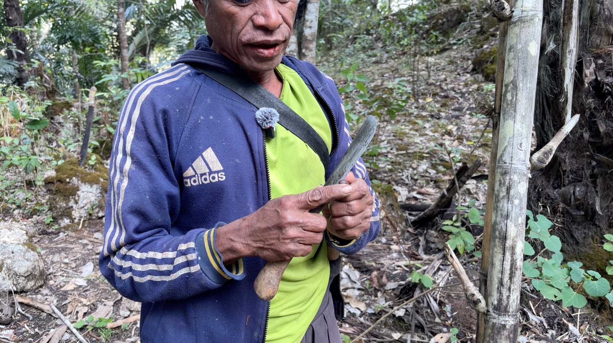
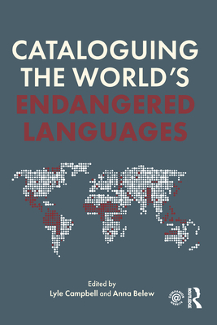
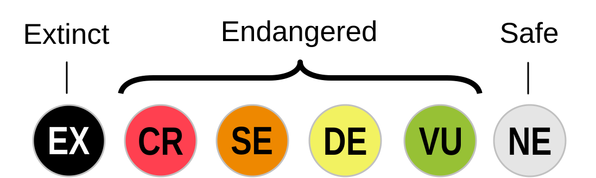

3 academic sources that might be appropriate, with why each one fits
Your initial research question(s)
A short explanation of what you expect to learn
Week 12 (Nov 10 and 12): No class next Thursday, November 12; I will give you an activity to do at home instead.
Draft (at least 1,750 words) is due Friday, November 20.
Today’s Plan
Part 1: Language endangerment (about 40 min)
Why bother? Wouldn’t we be better off with one language?
What makes a language endangered, and what causes it?
What it looks like: borrowing and lost knowledge
How many, how fast, and what predicts it? (checking the numbers)
How do we measure vitality?
Should we care? And who documents?
Part 2: Finding academic sources (about 30 min)
What counts as an academic source
Four ways to find them
Part 1: Language Endangerment
Warm-Up: Why Bother? (3 min)
“After all, wouldn’t we all be better off if we spoke a single language?” (Guérin and Yourupi, p. 209)
With a neighbor: Give one reason for yes and one reason for no.
What Is an Endangered Language?
A language is endangered when it is not passed on to younger generations.
Parents stop using their language regularly and shift to a dominant language
Their children become native speakers of the dominant language, non-fluent in the parents’ language
The grandchildren are even less proficient
When transmission stops across the whole community: the language is gone in a few generations (extinct)
The chief cause is language shift.
Krauss (1992):moribund = no longer learned by children (doomed unless reversed); endangered = still learned, but will stop if conditions continue; safe = neither.
Why Do Parents Stop? Causes
Pressure
Example in the chapter
Economic
A cash economy rewards a language of wider communication: Bislama lets you trade anywhere in Vanuatu (about 100 languages); a local language confines you to your dialect chain
Attitudes
The ancestral language is seen as worthless for jobs; the national language is seen as unifying and prestigious
Political
Monolingual policies; no funding for vernacular schools (Vanuatu cannot support schooling in 100 languages)
Sudden events
Typhoon on Pingelap: most of the population moved to Pohnpei
Which of these apply to Hawaiʻi? To a language you know?
What It Looks Like: Borrowing
Pollapese (Chuuk State, Micronesia). Paulina Yourupi, a native speaker, reports that speakers mix in English or Lagoon Chuukese words even when a Pollapese word exists. Why?
Prestige: English signals intelligence; Lagoon Chuukese signals being well-travelled
To show knowledge of a second or third language
For fun
The word comes to mind more easily (especially for multilinguals)
Mavea (Vanuatu): of about 30 speakers left, only 2 elders had a robust knowledge of the counting system; younger speakers count past 10 using Bislama numbers.
Borrowing is normal in healthy languages (Ch. 15). What makes this different?
What It Looks Like: Lost Knowledge and Changed Grammar
Specialized vocabulary fades when practices fade: ritual terms, avoidance (mother-in-law) speech, words for native plants, animals, fishing and hunting
Registers that reflect social structure disappear when the social structure changes
Grammar of non-fluent speakers shifts: changes that appear within one generation (not over centuries) are a sign of attrition

Why does losing the practice mean losing the words?
How Many Languages?
Area
Languages
% of world’s languages
Asia
2,296
32.4
Africa
2,139
30.1
Pacific
1,313
18.5
Americas
1,062
15.0
Europe
287
4.0
Total
7,097
100
The Pacific has 18.5% of the world’s languages but far fewer of its people. What does that mean for speakers per language?
Pacific Diversity: Three Countries
Country
Languages
% of world’s languages
Average speakers per language
Papua New Guinea
840
11.84
4,992
Vanuatu
117
1.65
1,666
Solomon Islands
71
1.0
5,334
Languages at risk (UNESCO Atlas, Moseley 2010): PNG 98, Vanuatu 46, Solomon Islands 17
Krauss (1992): a language is “safe” with at least 100,000 speakers. How many of these countries’ languages reach that?
Endangered Languages in the Pacific
Catalogue of Endangered Languages (ELCat), as of 2016
492 Pacific languages rated endangered: second only to Africa (606)
About 72% sit in the middle of the scale (“Threatened” or “Endangered”)
4 Pacific languages have lost their last speaker since 1960
1 is being revived: Sishëë (New Caledonia)
Here “Pacific” means Melanesia, Polynesia, and Micronesia; Hawaiʻi is counted with the United States.

Why might the Pacific have so many endangered languages? (Look back at the last slides.)
Are All Small Languages Doomed?
398 languages (about 6%) have 1 million or more speakers, and they serve 94% of the world’s people
6,699 languages (about 94%) are spoken by about 6% of people
But the raw number of speakers is not a good measure of vitality.
Chamorro (Guam) has the largest number of speakers in Micronesia (about 60,000) and is still endangered. Why? Some languages spoken in Vanuatu and PNG with only 100 speakers are quite vital and not endangered? How can that be?
What Predicts Endangerment?
Bromham et al. (2022): 6,511 languages, 51 predictors, one statistical model
Finding
Number of first-language speakers
Strongest predictor
Contact with neighboring languages
Not a driver by itself (more contact, less endangerment on average)
Road density
More roads, more endangerment
Years of schooling
More schooling, more endangerment
Without intervention: loss could triple within 40 years; at least 1,500 languages could stop being spoken by 2100.
Is Bislama a threat to Vanuatu’s languages? What would this study say?
“A Language Dies Every Two Weeks”?
Where does that number come from?
Krauss (1992): a rough guess that about 3,000 of 6,000 languages could stop being spoken during the 21st century
Crystal (2000): spread evenly over a century, that is about one every two weeks
The claim spread through news and reports as a current rate
Estimate of languages not being passed to children
Krauss’s guess (early 1990s)
about 50%
UNESCO Atlas (2010)
about 24%
Ethnologue (2014-2025)
about 16-17%
Newer estimates: one language every 3 months (ELCat) or every 6-13 weeks.
Why does it matter where a number comes from?
Measuring Vitality: UNESCO’s Nine Factors
F1
Intergenerational transmission (most crucial)
F2
Absolute number of speakers
F3
Proportion of speakers in the population
F4
Trends in existing language domains
F5
Response to new domains and media
F6
Materials for education and literacy
F7
Government and institutional policies
F8
Community members’ attitudes toward their language
F9
Type, amount, and quality of documentation
Other scales: Fishman’s GIDS, Expanded GIDS, Language Endangerment Index

Apply It: Mavea (Vanuatu)
Factor
Rating
Comment
F1 Transmission
2
No longer transmitted
F2 Speakers
30
Fluent population aging
F3 Proportion
1/2
15% of population speaks Mavea
F4 Domains
2
Some households, private conversation
F5 New domains
0
Language is inactive
F6 Education
0
Not used in school
F7 Policy
0
Supportive policy exists but not implemented
F8 Attitudes
1
Few speakers worry about loss
F9 Documentation
3
Dictionary, ABC book, grammar, annotated texts with audio
Discuss: Which factor would you work on first? Which is good news? What does the table miss?
Another Scale: ELCat’s LEI
The Language Endangerment Index (University of Hawaiʻi at Mānoa) uses four factors, each scored 0-5:
Intergenerational transmission (counts double)
Absolute number of speakers
Speaker number trends
Domains of use
It can work with limited information, and reports how certain the rating is (1 factor = 20% certain; all 4 = 100%).
Careful: a score is an approximation. Monolingualism signals vitality in some places, but tells you nothing in the highlands of Papua New Guinea, where multilingualism is the norm.
Should We Care? The 1992 Debate
“Don’t assume it’s worth saving”
“Care”
Ladefoged: it is paternalistic to assume communities want their language kept; Tanzania promotes Swahili for national unity; a Dahalo speaker did not regret that his sons speak only Swahili
Krauss: extinction of a language diminishes the world like the loss of a panda or condor; linguists are far quieter than biologists
Newman: a hopeless cause
Hale: a language embodies a people’s intellectual wealth; losing it is irretrievable loss
McWhorter:diversity impedes communication
For many speakers: identity, equality, social justice (Guérin and Yourupi)
Return to the board: whose reasons are on which side? Who gets to ask this question?
Reasons People Give for Caring
Lee and Van Way (2016) list five consequences of language loss:
Loss of cultural or ethnic identity
Loss of knowledge of prehistory (words are the only way to reconstruct a culture’s past)
Loss of linguistic diversity
Loss of part of human knowledge, including traditional ecological knowledge
Loss of what languages can show us about human language and cognition
Which of these would a community member give? Which would a linguist give? Which could you use in a paper?
Documentation: How Far Have We Come?
Seifart et al. (2018), 25 years after the 1992 call to action:
About 500 languages now reasonably documented; archives, digital recording, and online catalogues
Still, roughly 35-42% of the world’s languages are substantially undocumented
About 2,750 languages have no real grammatical description; over 1,400 of them are endangered
The “transcription bottleneck”: it takes far longer to transcribe than to record
Why would documentation matter even if a community decides not to keep using its language?
Activity: Explore the Endangered Languages Project (8 min)
endangeredlanguages.com (ELCat, run from UH Mānoa) catalogues 3,000+ endangered languages, with a language map and thousands of resources.
In groups, one language each: Mavea · Paluai · Chamorro · Kosraean · Boiken · Rapa Nui
Find your language (try other spellings). What is its endangerment rating? How many speakers, and how certain is the rating?
Which of the LEI factors does the entry actually give information on? What is missing?
On the map, zoom to the Pacific. Where do endangered languages cluster? Does your language fit the pattern?
Open the resources for your language. Copy one academic reference (author, year, title).
Report back: one surprise, and one source you could cite.
Sources Behind Today’s Slides
Models of how to cite (Unified Style Sheet for Linguistics):
Bromham, Lindell, et al. 2022. Global predictors of language endangerment and the future of linguistic diversity. Nature Ecology & Evolution 6:163-174.
Belew, Anna, and Sean Simpson. 2018. The status of the world’s endangered languages. In Cataloguing the world’s endangered languages.
Boissonneault, Michaël, and Harald Hammarström. 2026. What do we know about the language extinction rate? Cambridge Prisms: Extinction 4:e14.
Hale, Ken, et al. 1992. Endangered languages. Language 68(1):1-42.
Krauss, Michael. 1992. The world’s languages in crisis. Language 68(1):4-10.
Ladefoged, Peter. 1992. Another view of endangered languages. Language 68(4):809-811.
Lee, Nala Huiying, and John Van Way. 2016. Assessing levels of endangerment in the Catalogue of Endangered Languages (ELCat) using the Language Endangerment Index (LEI). Language in Society 45:271-292.
Seifart, Frank, et al. 2018. Language documentation twenty-five years on. Language 94.
Wrap-Up: Part 1 (2 min)
Write one sentence: For one Pacific language (any), which UNESCO factor would you worry about first, and why?
(This could be a Final Paper question. Endangerment, shift, and vitality all work as angles.)
Part 2: Finding Academic Sources
Why This Matters
The Final Paper needs at least 7 academic sources, in one consistent citation style.
Due
Component
Fri Nov 6
3 sources + why each fits + initial question
Fri Nov 20
Draft (1,750+ words), citing sources
Dec 15
Final paper (2,500+ words) and reference list
Today’s goal: leave knowing where to look, how to tell if it counts, and how to keep track of it.
What Counts as an Academic Source?
Usually counts
Usually does not
Peer-reviewed journal articles
Wikipedia, blogs, personal websites
Books from academic publishers (e.g., university presses)
News and magazine articles
Chapters in edited books (like our Course Reader)
Tourism and cultural-center websites
Reference grammars and dictionaries
Social media, videos, AI summaries
Dissertations and theses
Test: Who wrote it? Who published it? Does it cite its sources? Was it reviewed by other experts?
Method 1: Start With What You Have
Mine the Course Reader. Every chapter has a reference list.
Find the chapter closest to your topic
Read its section on your topic, then look at who it cites
Those references are already-vetted academic sources
Example from today’s chapter: a student interested in Vanuatu would find
François (2012), International Journal of the Sociology of Language
Crowley (1995), Oceanic Linguistics
Guérin (2008), Language Documentation & Conservation
Which chapter will you start from?
Method 2: Search Smart
Where: the UH Mānoa Library website (databases and catalog), Google Scholar, and open-access journals
What to type: combine the language or place with the topic:
Maveagrammar
Chamorrolanguage shift
Samoanborrowing
Bislamamultilingualism Vanuatu
Try alternative names and spellings. Our chapter says Pollapese was previously spelled Pullapese, and sources may use either.
Tip: if you get nothing, make the search broader (the language family, or the region); if you get too much, add a topic word.
Language-specific starting points:Glottolog (a bibliography of grammars and dictionaries for each language), the Catalogue of Endangered Languages (ELCat), WALS, and archives such as PARADISEC.
Method 3: Follow the Chain
Backward: read a good source’s reference list and find the sources it cites.
Forward: in Google Scholar, click “Cited by” to find newer work that cites it.
Same author: search the author’s name. Specialists in a language write many papers about it.
Guérin 2008
↙ ↘
Sources it cites Newer work citing it
(backward) (forward: "Cited by")
A good source leads to three more.
Method 4: Ask for Help
Me: office hours Wednesdays and Fridays, 1:30-2:30, Moore 574 (or Zoom)
A UH librarian: librarians help with searching and databases
Classmates: share what you find; several of you are on similar topics
AI tools: the syllabus (Section 3.3) allows them to support your thinking and polish writing, not to write drafts or summarize readings. They can make up citations: verify that every source exists before you use it, and disclose any use.
Is It a Good Source for My Question?
Before you add a source to your list, check:
Who wrote it, and are they an expert on this language or topic?
Where was it published (journal, university press)?
When? Older work can still be valuable (e.g., a grammar), but check for newer work on changing topics like language vitality
Does it fit your question? Skim the abstract, introduction, and conclusion
Does it cite its evidence?
Reading efficiently: abstract, then introduction, then conclusion, then the sections you need. You do not have to read every page.
Case Study: Trace a Number to Its Source
Claim: “A language dies every two weeks.”
News and websites repeat it
Crystal (2000) is cited for it
Crystal is illustrating a projection from Krauss (1992)
Krauss is guessing from regional counts and expert opinion
Boissonneault and Hammarström (2026) trace the whole chain
What would you have cited if you stopped at step 1? Step 2? What if you followed it to step 5?
Keep Track From Day One
For each source, record:
Field
Example
Full reference
Guérin, Valérie. 2008. Writing an endangered language. Language Documentation & Conservation 2:47-67.
What it says (2-3 sentences, in your own words)
How I will use it
Background on Mavea; orthography decisions
Tools: a free reference manager such as Zotero, or just a spreadsheet.
Pick one citation style and stick to it. Our chapters use the Unified Style Sheet for Linguistics; APA or MLA is fine too.
Source Hunt (10 min)
On your laptop or phone, find 2 academic sources for your topic.
Start from a Course Reader chapter and its reference list (Method 1)
Then try one search (Method 2), one “Cited by” (Method 3), or the resources on your language’s page at endangeredlanguages.com
For each source, write the full reference and one sentence on why it fits
Stuck? Raise your hand. If your topic is not set, pick the one you are leaning toward.
Share: one source you found, and how you found it.
Tomorrow’s Submission: Checklist
“How did Spanish contact and language shift affect Rapa Nui?” is a question. “Rapa Nui” is a topic.
Late work loses 5% per day. Questions? Come to office hours (W/F 1:30-2:30, Moore 574).
![]()